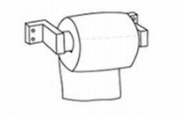

The eternal question: Should toilet paper hang over or under? Modern engineering has created an efficient way to dispense toilet paper, but it has left orientation up to the consumer. In determining which is best, there are numerous variables, statistics, and principles of mechanics to take into account. And simple efficiency is not the only concern: for many, TP orientation is a matter of identity, lifestyle, and passion. Let us walk you through the timeless and enduring debate.
50% of people pay attention to toilet paper orientation.
The average American spends half an hour per year looking for the end of the roll. National agreement would save Americans $300 million per year in productivity, or enough to buy everyone in America 2 rolls of toilet paper.
20% of people have flipped a roll around when it was facing the wrong direction.
1 in 5 people get annoyed if the roll is facing the wrong direction. Men are more likley than woman to become annnoyed with the situation.
Click on the picture that best describes how you install your TP.
